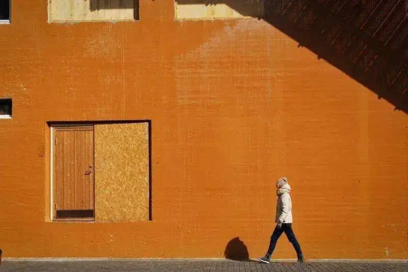
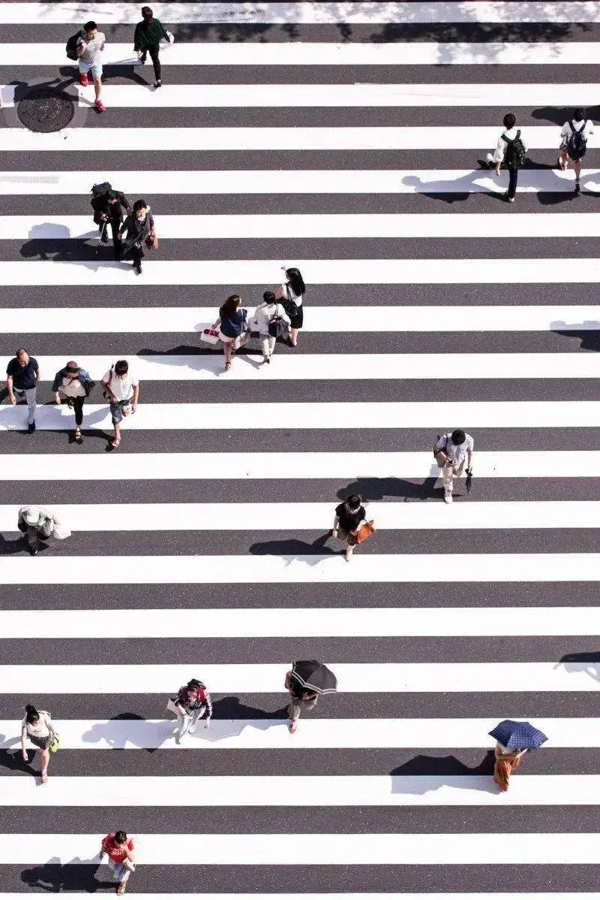

To take a good photo, ask yourself a few questions before you press the shutter. How does the subject draw the eye? How do you grab the viewer's attention at once? How can you cut the elements that distract from the frame?
Below, we show you how to use composition to make your work more visually appealing.
1. Confirm the focus and the subject
At its most basic, a photo must have a subject or an interesting focus. With a subject, the photo has meaning, and it can hold the viewer's attention. Without one, it is just an ordinary image, and you cannot call it a photograph.
When you shoot, always keep in mind what the subject of this photo is, or what makes this scene interesting.
Hetty Stellingwerf
2. The rule of thirds
The rule of thirds is the most common composition method. You divide the frame horizontally into three parts, and you can place the subject at the center of any part.
Turn on the camera grid lines. The four points where the two horizontal lines meet the two vertical lines draw the eye most easily. Place the subject on one of these intersections, and the whole frame will look more balanced and pleasing. The photo will also feel tight and strong. This is the basic rule of thirds.
Rod Long
3. Diagonal balance
Using the rule of thirds can also leave too much blank space, so the weight looks unbalanced. To avoid this, you can add an element to balance the weight of the frame and fill the blank space at the same time.
Here the diagonal principle helps balance several subjects in a work. The diagonal principle means you place the most important part of the image along a diagonal line.
Calum Lewis
If all the important elements sit in the same area, the center of the image looks unbalanced. When you shoot, imagine the diagonal of the frame, drawn from one corner to the opposite corner, and place the subject you want on this line.
4. Shoot from a low angle
Compared with shooting at eye level, shooting from a low angle opens a new world in photography. This technique helps simplify the composition and gives a unique view that most people do not usually see.
Lisa Pellegrini
5. Add a foreground
A foreground gives the image more depth. It helps lead the photo from front to back and adds layers to the whole frame.
Sarah Crutchfield
For example, in this photo, a small boat is the foreground. It leads to the arched bridge ahead and shows the direction the boat is moving. This adds a touch of fun to the work.
6. Use leading lines
Adding lines to a work is a good way to guide the eye. We wrote an article about leading-line composition. Learn to use leading lines well, and your phone photos can become great work.
Ian Froome
7. Fill the frame with the subject
If the subject is not clear or striking enough in its setting, the simplest composition is to fill the whole frame with the subject. Remove the busy background, make sure the subject gets full attention, and let the subject show more detail.
This composition is often used for unique and abstract images. It can create a sense of mystery.
Annie Spratt
For example, in this photo, the leaves take up 90 percent of the frame. The texture and detail are clear, which adds an abstract feel to the whole work.
8. Leave room for a moving subject
If you shoot a moving subject, such as a person walking or riding a bike, the viewer's eye follows the direction of the movement. So when you shoot, the best method is to leave enough room in the frame. If there is not enough room, the frame often feels unbalanced and uneasy.

Tatiana Diakova
This principle also applies to portraits. The eye follows a person's gaze, so leave more room in the direction of the gaze. This is also a way to spark the viewer's imagination.

Photography is an art. There are no rules about what you should or should not do. The tips and tutorials above only point a direction. You can use them in most photography, but they are not meant to limit your creativity.